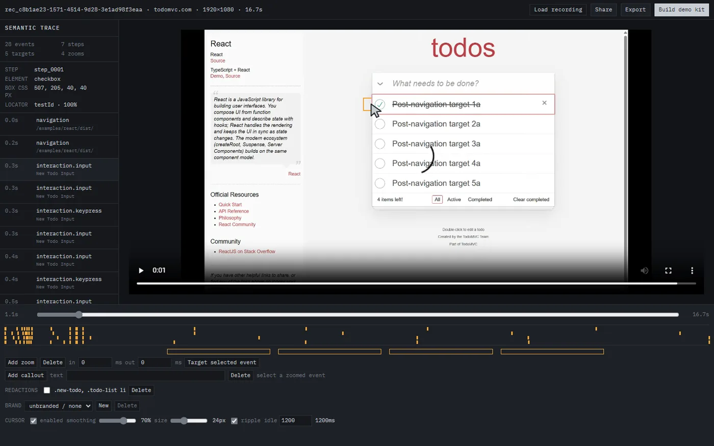

Every screen recorder saves pixels and throws away everything the browser
already knew. Cutscene records a Chrome tab and the DOM events behind it,
together.
playwright.spec.tsthe same ranked locators, as a test

the editretime, retarget, blur, crop, brand
Interactions on elements
with no accessible name (5)
step_0001 at 1.2s
step_0002 at 4.6s
step_0003 at 7.3s
quality.mdan audit of the path you just walked
Generated from one trace file, so nothing can drift out
of step with anything else.
It already knew
Five checkboxes. No accessible name.
Every element you touched carries its role, accessible name
and ranked locators. Read them back and the recording audits the path it
just walked. This is the real report from the capture on this page.
Interactions on elements with no accessible name (5)
step_00011.2scheckbox exposes no accessible name
step_00024.6scheckbox exposes no accessible name
step_00037.3scheckbox exposes no accessible name
step_00049.9scheckbox exposes no accessible name
step_000512.6scheckbox exposes no accessible name
Derived from the trace. No page was re-inspected to produce this.
It promotes the locator that actually resolved and
writes the trace back, so the rename is fixed for good. The deleted button
has nothing left to promote, so the run still fails. It repairs what it
can and refuses to hide what it cannot.
A stale recording looks fine right up until someone notices.
A stale Cutscene demo fails like a failing test.
Go and click it.
The demo is a static file exported by the editor. It pauses the video at
every recorded click and waits for you to hit the real element. No
install, no account.